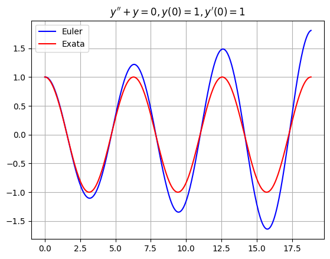
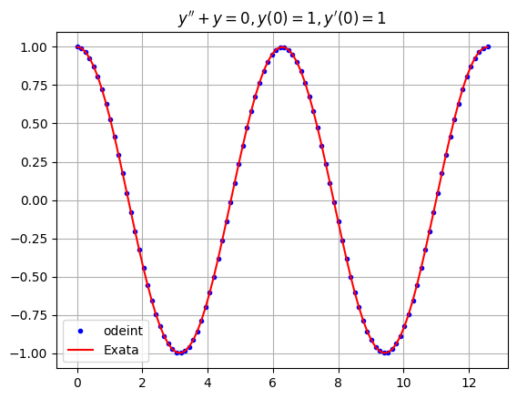

Sistemas de Equações#
Um sistema de equações diferenciais é um conjunto de equações envolvendo funções desconhecidas \(u_0,\dots,u_{N-1}\) e suas derivadas. A dimensão de um sistema é o número \(N\) de funções desconhecidas. A ordem do sistema é a derivada de maior ordem que aparece no conjunto de equações. Todo sistema de equações diferenciais é equivalente a um sistema de primeira ordem em uma dimensão superior.
import numpy as np
import scipy.integrate as spi
import matplotlib.pyplot as plt
Sistemas de Primeira Ordem#
Todo sistema de equações diferenciais é equivalente a um sistema de primeira ordem em uma dimensão superior. Por exemplo, considere uma equação diferencial de segunda ordem
onde \(a,b,c\) são constantes (com \(a \ne 0\)) e \(F(t)\) é uma função conhecida. A função desconhecida \(y(t)\) é de segunda ordem na equação, portanto, introduzimos duas novas variáveis \(u_0 = y\) e \(u_1 = y'\) e escrevemos a equação de segunda ordem 1-dimensional como um sistema de primeira ordem 2-dimensional
O procedimento para qualquer sistema é semelhante:
Identifique a ordem de cada função desconhecida no sistema.
Se \(y\) tem ordem \(n\), então introduza \(n\) novas variáveis \(u_0 = y,u_1=y',\dots,u_{n-1}=y^{(n-1)}\).
Reescreva as equações apenas em termos das novas variáveis.
Por exemplo, considere o sistema
Introduza novas variáveis \(u_0 = x, u_1 = y, u_2 = y'\) e reescreva o sistema
Notação Vetorial#
Um sistema de equações diferenciais de primeira ordem de dimensão \(N\) é da forma
Escreva o sistema em notação vetorial
onde
Método de Euler#
Como aplicamos o método de Euler a um sistema de equações de primeira ordem? Simplesmente aplicamos o método a cada função desconhecida no sistema.
Equações de Segunda Ordem#
Considere uma equação diferencial de segunda ordem com coeficientes constantes
Aplique o método de Euler a \(y\) e \(y'\) simultaneamente:
onde
Por exemplo, considere a equação \(y'' + y = 0\), \(y(0)=1\), \(y'(0)=0\). Sabemos que a solução exata é \(y(t) = \cos(t)\). Calcule a aproximação pelo método de Euler e compare com a solução exata.
y0 = 1; v0 = 0;
t = np.linspace(0,3*2*np.pi,3*100)
y = np.zeros(len(t))
y[0] = y0
dy = np.zeros(len(t))
dy[0] = v0
for n in range(0,len(t)-1):
h = t[n+1] - t[n]
y[n+1] = y[n] + dy[n]*h
dy[n+1] = dy[n] - y[n]*h
plt.plot(t,y,'b',t,np.cos(t),'r'), plt.grid(True)
plt.title("$y'' + y = 0 , y(0) = 1 , y'(0) = 1$")
plt.legend(["Euler","Exata"])
plt.show()

Implementação#
Considere um sistema de primeira ordem em notação vetorial
A fórmula para o método de Euler é quase exatamente a mesma que para equações escalares
onde \(\mathbf{u}_n\) é o vetor de valores no passo \(n\)
tal que \(u_{k,n} \approx u_k(t_n)\) no passo \(n\) para \(k=0,\dots,N-1\).
Escreva uma função chamada odeEuler que receba os parâmetros de entrada f, t e u0 onde:
fé uma função que representa o lado direito da equação \(\mathbf{u}' = \mathbf{f}(t,\mathbf{u})\)té um array NumPy 1Du0é um valor inicial \(\mathbf{u}(t_0)=\mathbf{u}_0\) onde \(t_0\) é o valort[0]
A função odeEuler retorna um array NumPy 2D U de tamanho (len(t),len(u0)) com valores \(u_k(t_n)\) na coluna \(k\) e linha \(n\).
def odeEuler(f,t,u0):
U = np.zeros((len(t),len(u0)))
U[0,:] = u0
for n in range(0,len(t)-1):
h = t[n+1] - t[n]
k1 = f(t[n],U[n,:])
U[n+1,:] = U[n,:] + k1*h
return U
Teste a função odeEuler no exemplo \(y'' + y = 0, y(0)=1, y'(0)=0\) e compare com a solução exata \(y(t) = \cos(t)\).
def f(t,u):
dudt = np.zeros(2)
dudt[0] = u[1]
dudt[1] = -u[0]
return dudt
t = np.linspace(0,3*2*np.pi,3*100)
u0 = [1,0]
U = odeEuler(f,t,u0)
plt.plot(t,U[:,0],'b',t,np.cos(t),'r'), plt.grid(True)
plt.title("$y'' + y = 0 , y(0) = 1 , y'(0) = 1$")
plt.legend(["Euler","Exata"])
plt.show()
scipy.integrate.odeint#
A função scipy.integrate.odeint funciona da mesma forma que nossa função odeEuler acima, exceto que a ordem de \(t\) e \(\mathbf{u}\) é invertida
Por exemplo, use odeint para aproximar a solução da equação de segunda ordem
e compare com a solução exata. O resultado é muito mais preciso que o método de Euler!
def f(u,t):
dudt = np.zeros(2)
dudt[0] = u[1]
dudt[1] = -u[0]
return dudt
t = np.linspace(0,2*2*np.pi,2*50)
u0 = [1,0]
U = spi.odeint(f,u0,t)
plt.plot(t,U[:,0],'b.',t,np.cos(t),'r'), plt.grid(True)
plt.title("$y'' + y = 0 , y(0) = 1 , y'(0) = 1$")
plt.legend(["odeint","Exata"])
plt.show()
